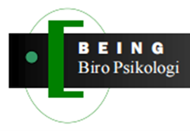

💬
Teks (Chat)
Konsultasi berbasis pesan teks dengan ruang percakapan yang aman.

Temukan psikolog, coach, konselor, dan clinical supervisor yang sesuai dengan kebutuhan Anda melalui proses pencocokan yang terarah.
Konsultasi berbasis pesan teks dengan ruang percakapan yang aman.
Konsultasi melalui video atau voice call sesuai jadwal.
Pertemuan langsung di lokasi layanan yang telah disepakati.
Isi identitas serta kebutuhan layanan.
Pilih dari rekomendasi profesional yang sesuai.
Chat, telekonsultasi, atau tatap muka.
Masuk ke ruang konsultasi sesuai jadwal.
Unduh laporan PDF dan terima notifikasi.
Clinical Supervisor • Stres kerja • Pengembangan profesional
Psikolog Klinis • Kecemasan • Regulasi emosi
Psikolog Pendidikan • Remaja • Keluarga